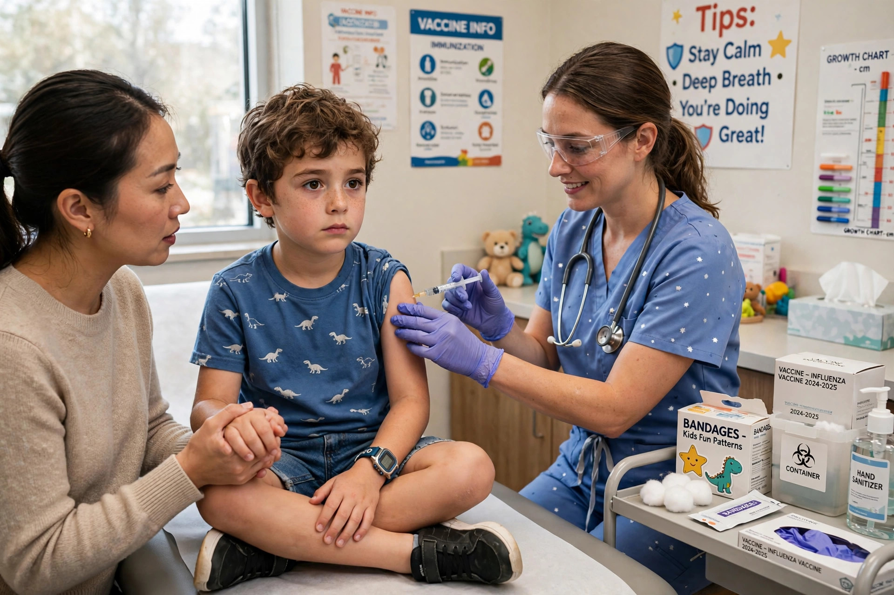

Immunization (or immunisation) is the process by which an individual's immune system becomes fortified against an infectious agent, most commonly through the administration of a vaccine. It is a primary means of preventing infectious disease.

Vaccines stimulate the body's own immune system to develop adaptive immunity to a pathogen without causing the disease itself. Immunization may be active, via vaccination, or passive, via transfer of antibodies such as immunoglobulin or maternal antibodies.
Practices of variolation against smallpox existed for centuries in Asia and were introduced to Europe in the 18th century. Edward Jenner's cowpox inoculation experiments in 1796 led to vaccination. In the 19th and 20th centuries Louis Pasteur and others developed vaccines against rabies, diphtheria, polio and many other diseases. The World Health Organization's Expanded Programme on Immunization was established in 1974.
When a sufficiently high proportion of a population is immune, herd immunity protects those who cannot be vaccinated. Immunization is credited with the eradication of smallpox (1980) and rinderpest, and dramatic reductions in polio, measles and tetanus.
Most countries publish recommended childhood immunization schedules. Debates over mandates, access in low-income countries, cold-chain logistics, and vaccine hesitancy remain major public-health issues.